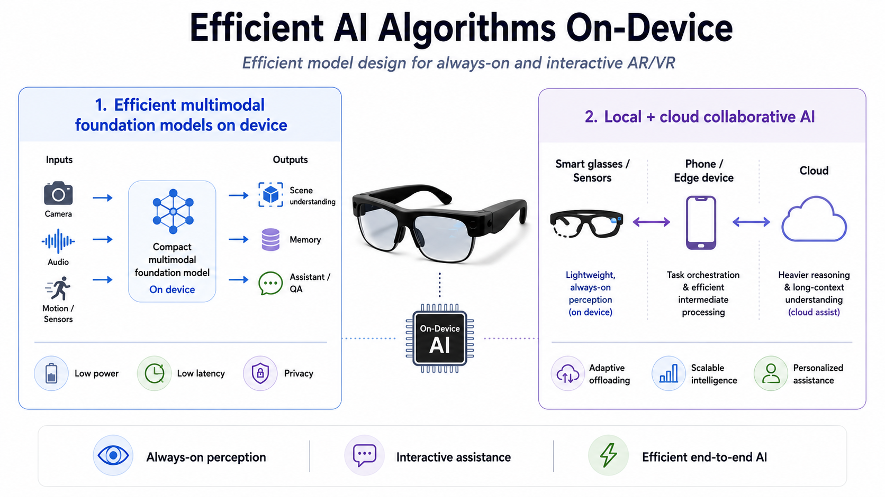
Efficient AI Algorithms on-Device
Efficient model design for always-on and interactive AR/VR: efficient multimodal foundation models, contextualized AI, neural architecture search, visual memory, and foveated perception.
Efficient AI for smart glasses and edge systems
Passionate AI System Researcher, Meta Reality Labs
I work on efficient on-device AI for AR/VR, smart glasses and robots, spanning vision foundation models, contextualized AI applications, foveated and behavior-driven perception, and efficient models and deployment on edge systems. My research connects AI algorithms, hardware, and full-stack systems, from model design and deployment to custom sensing and computing silicon.
Two connected tracks: efficient models and efficient systems.

Efficient model design for always-on and interactive AR/VR: efficient multimodal foundation models, contextualized AI, neural architecture search, visual memory, and foveated perception.
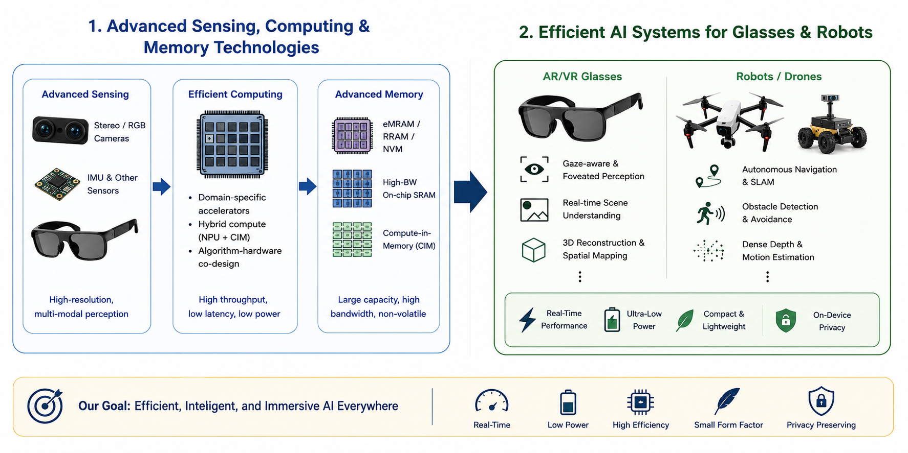
Full-stack AI acceleration through advanced technologies across sensors, processors, and memory systems: low-power vision SoCs, eMRAM/RRAM/NVM, compute-in-memory, and ASIC-aware algorithm co-design.
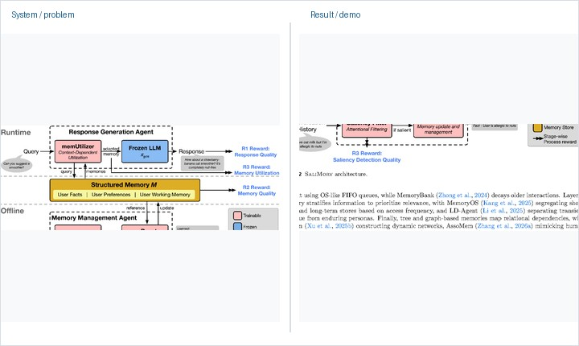
arXiv, 2026
A memory orchestration framework for personalized conversational agents.
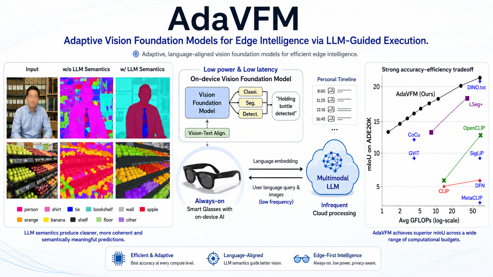
arXiv, 2026
LLM-guided routing for vision foundation models under edge latency and power constraints.
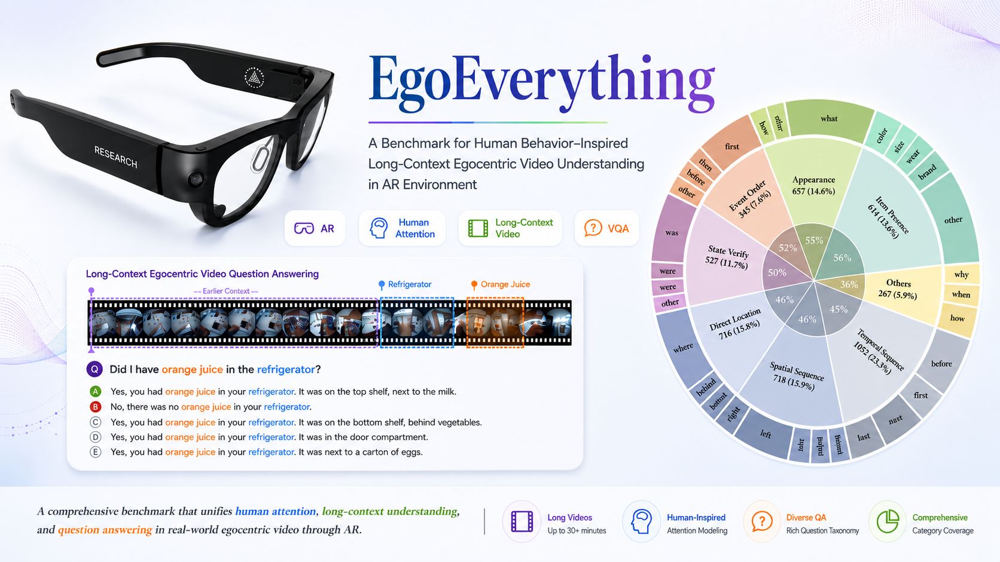
ECCV, 2026
A benchmark for long-context egocentric video understanding in AR, using human attention signals to build behavior-inspired questions.
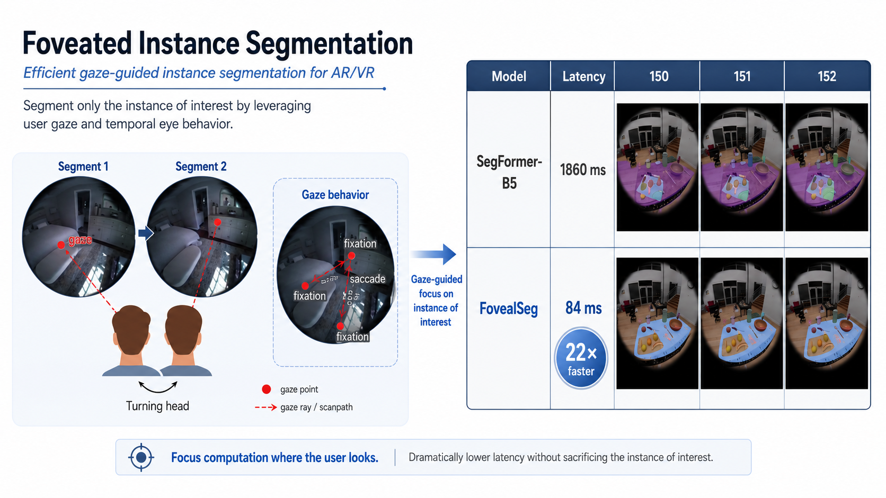
CVPR, 2025
A gaze-aware segmentation strategy that focuses computation on the instance of interest.
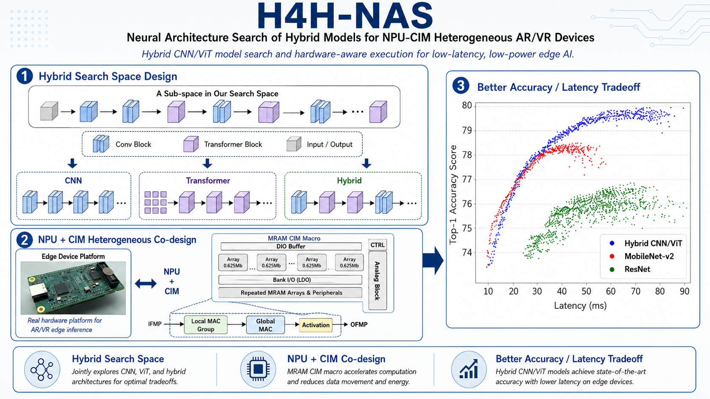
ASP-DAC, 2025
A search workflow for hybrid CNN/ViT models targeting heterogeneous NPU and compute-in-memory systems.
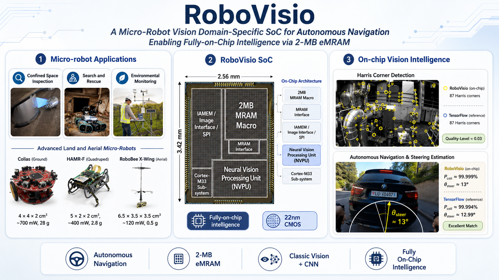
IEEE Journal of Solid-State Circuits, 2024
A micro-robot vision SoC with on-chip intelligence and eMRAM for autonomous navigation workloads.
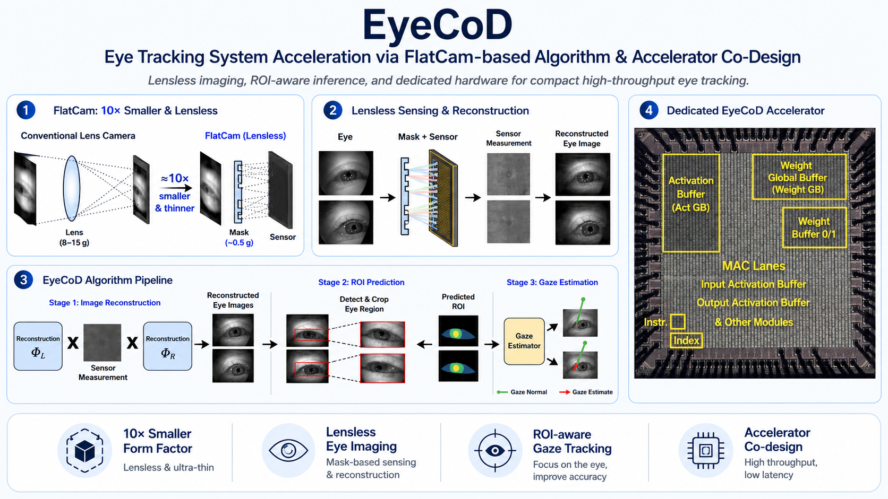
ISCA, 2022; IEEE Micro Top Picks
First Place, University Demo Best Demonstration at DAC 2022A FlatCam-based eye tracking algorithm and accelerator co-design for compact, high-throughput AR/VR systems.
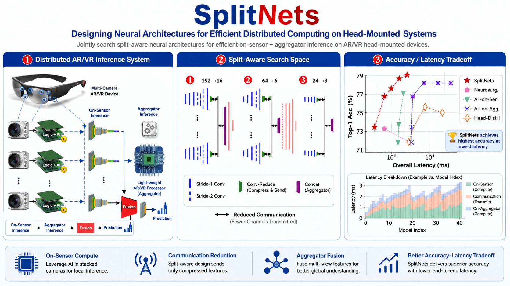
CVPR, 2022
Neural architecture design for distributing computation across sensors and aggregators on head-mounted systems.
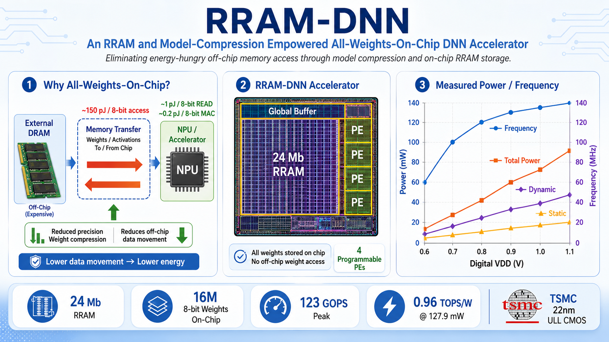
IEEE Journal of Solid-State Circuits, 2020
A DNN accelerator using RRAM and model compression to keep weights on chip and reduce memory energy.
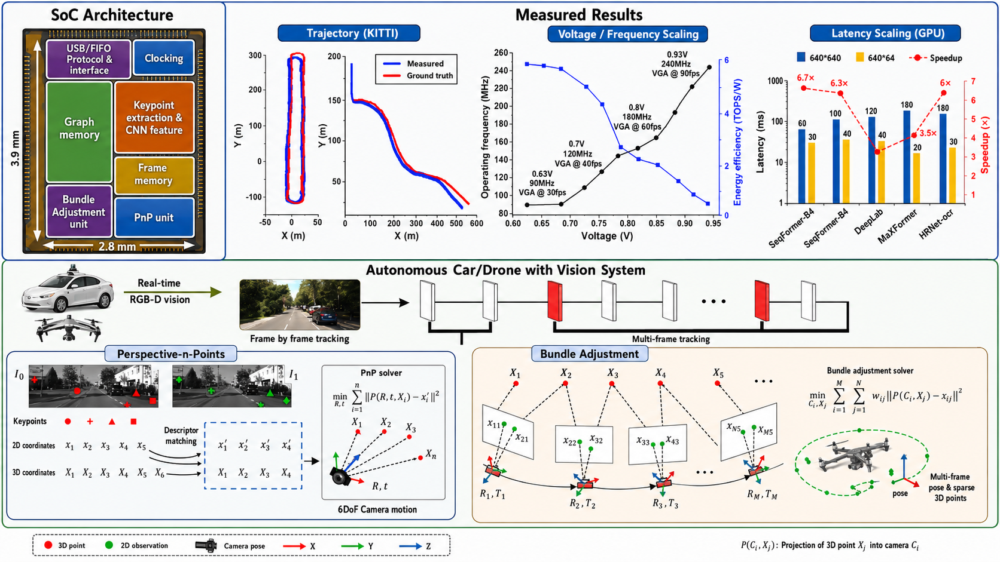
ISSCC, 2019
A low-power CNN-SLAM processor for real-time visual navigation and wide-range exploration.
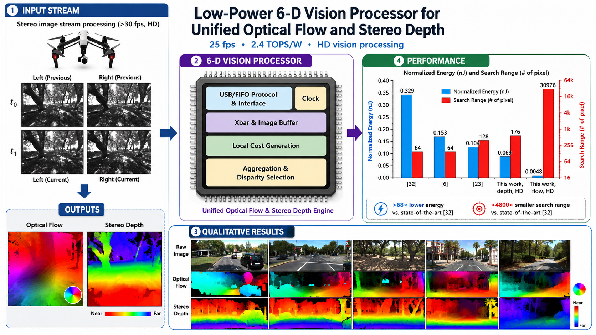
IEEE JSSC, 2019; VLSI/ISSCC-era processor work; SiPS algorithm thread
First Place, Bob Owens Best Student Paper Award at SiPS 2016A unified optical-flow and stereo-depth vision pipeline and processor lineage for low-power autonomous navigation.
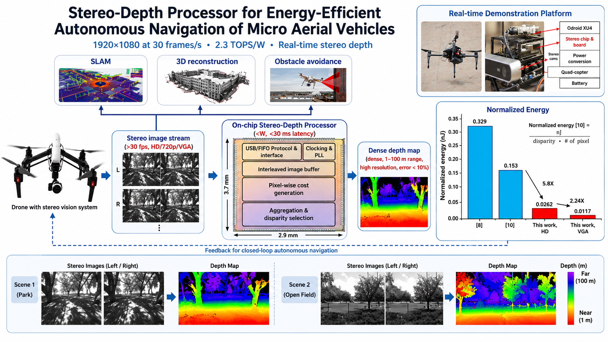
ISSCC, 2017; IEEE JSSC invited version
A stereo-depth processor delivering real-time high-resolution depth for energy-efficient micro aerial vehicle navigation.
PhD in Electrical and Computer Engineering, 2019
Thesis: Energy-Efficient, Mobile Computer Vision and Machine Learning Processors
Doctoral research mentors: Hun-Seok Kim, Dennis Sylvester, and David Blaauw.
BS in Electrical Engineering, 2014
Leading research and technology investigations for efficient, low-power, low-latency vision processing and contextualized AI applications for smart glasses and AR/VR systems.
Worked on efficient on-device machine learning for VR/AR platforms.
Worked on agile design methodology and sparse machine-learning processor architectures.
{kind=link}
{kind=link}
{kind=link}
{kind=link}
{kind=link}
{kind=link}
{kind=link}
{kind=link}
{kind=link}
{kind=link}
{kind=link}
{kind=link}